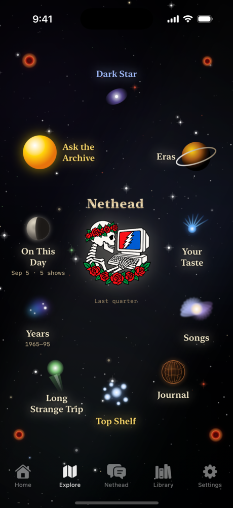
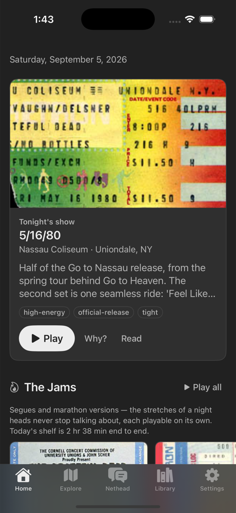
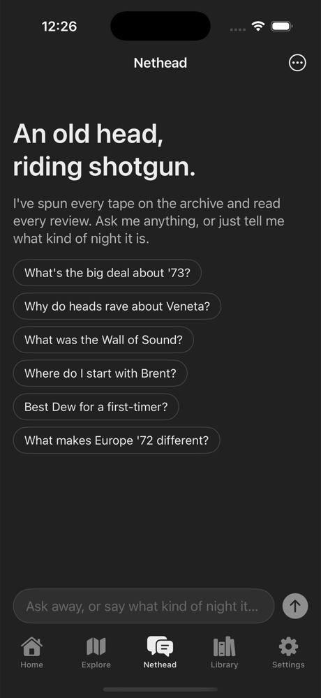

The music never stopped. Neither should discovering it.
You know how it goes. Somebody says “man, you gotta hear 5/8/77” and suddenly it’s 3am, you’re six shows deep, and Jerry is peeling the paint off some field house in 1974.
The Internet Archive holds thousands of tapes — auds, boards, matrixes, thirty years of the boys cooking — and the only map has ever been the heads in the comment section. Deadhead AI puts one of those heads in your pocket. The app hosts no music. It just knows the road.



tonight’s show ✦ the constellation ✦ the head riding shotgun
Everything it does, no fluff.
“Mellow ’73 for a rainy Sunday.” “Hottest Scarlet>Fire of the eighties.” “Five hour drive — build me a second set that never lands.” Plain English in, real tapes out. Every answer points at a real recording with a real setlist. No hallucinated bootlegs, ever.
Open any night and get the story: why this one matters, which source to spin, where the X-factor kicks in. Decades of listener reviews and ratings pick the best tape of the night — the way it’s always been done, just faster.
Anniversaries, tour seasons, songs rising out of your own listening — smart shelves refresh through the day. Pin one and it’s yours to keep and edit.
Primal Dead. Europe ’72. The ’77 peak. Guided paths through the catalog, show by show, with the context the liner notes never gave you. (Respect the MIDI years.)
Streams straight from archive.org with a real queue, lock-screen controls, and cached setlists so the app works offline. Audio is never stored. Chase one song — Dark Star, Eyes, Playing — as it stretches from three minutes to thirty across the decades.
The full AI brain is free with Apple sign-in — and your shelves and journal ride along in your own iCloud. Skip it and everything still works on a curated offline knowledge base. No ads, no trackers, nobody selling your trip diary.
Thirty years of tape is a long strange road. Bring a guide who’s heard it all.